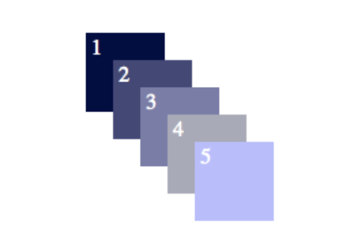
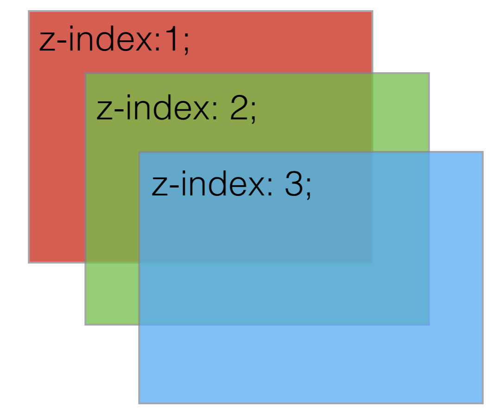
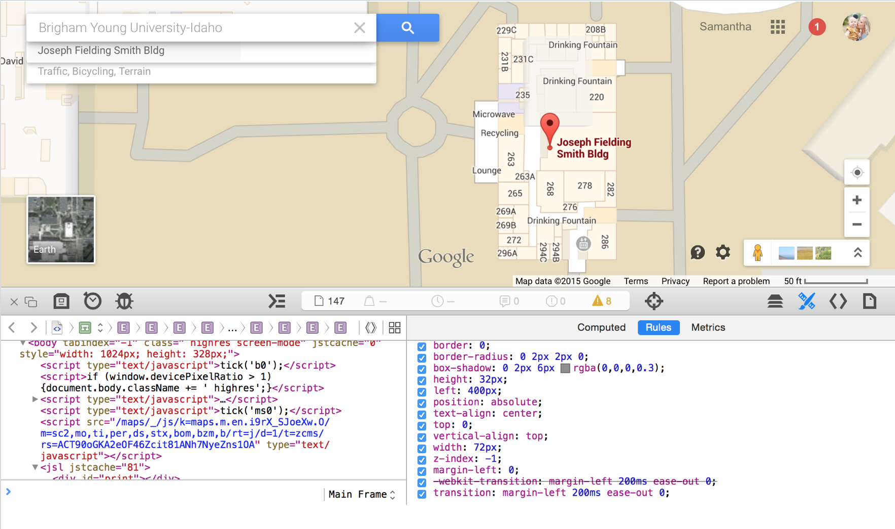

Teaching Presentation
Z-Index
The CSS z-index specifies the stack order of an element
Can you guess what z-index the following elements have?
Here's a hint...An element with greater stack order is always in front of an element with a lower stack order.
How did you do? Remeber...z-index only works on positioned elements (position:absolute, position:relative, or position:fixed).
Example at W3Schools
The z-index can also be a negative number.
Here you can see a z-index in the wild.
